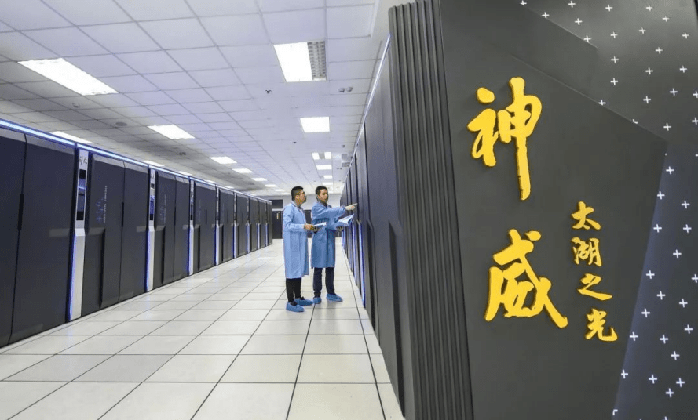
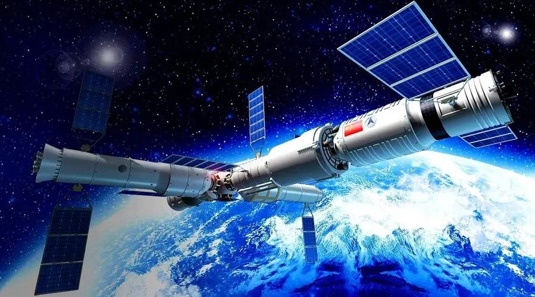

建国以来的科技发展
改革开放以来，中国的科技事业得到了进一步的发展。中国开始引进国外的先进技术，积极开展国际合作，加强自主创新。在这个时期，中国的科技工作者取得了许多重大的成果，如成功研制出“神舟”系列飞船、高速列车、大型客机等，这些成果让中国的科技事业迈上了新的台阶。
近年来，中国的科技事业取得了更加显著的成就。中国开始大力推进创新驱动发展战略，加强自主创新能力，推动科技成果向实际生产力转化。在这个时期，中国的科技工作者取得了许多重大的成果，如成功研制出量子通信、超级计算机、载人深潜器等，这些成果让中国的科技事业达到了新的高度。
建国初期的科技
建国初期，中国的科技水平十分落后，国内的科技工作者面临着巨大的挑战。然而，中国的科技工作者并没有放弃，他们不断地努力探索，积极学习国外的科技成果，不断进行科技创新。在这个时期，中国的科技工作者取得了许多重大的成果，如成功研制出第一枚原子弹、第一颗人造卫星、第一艘核潜艇等，这些成果为中国的科技事业奠定了坚实的基础。
改革开放以来科技的研发
中国的科技事业得到了进一步的发展。中国开始引进国外的先进技术，积极开展国际合作，加强自主创新。在这个时期，中国的科技工作者取得了许多重大的成果，如成功研制出“神舟”系列飞船、高速列车、大型客机等，这些成果让中国的科技事业迈上了新的台阶。
近年来，中国的科技事业取得了更加显著的成就?
中国开始大力推进创新驱动发展战略，加强自主创新能力，推动科技成果向实际生产力转化。在这个时期，中国的科技工作者取得了许多重大的成果，如成功研制出量子通信、超级计算机、载人深潜器等，这些成果让中国的科技事业达到了新的高度。

中国开始大力推进创新驱动发展战略，加强自主创新能力，推动科技成果向实际生产力转化。在这个时期，中国的科技工作者取得了许多重大的成果，如成功研制出量子通信、超级计算机、载人深潜器等，这些成果让中国的科技事业达到了新的高度。
我国航天工业发展
中国航天事业自1956年创建以来，经历了艰苦创业、配套发展、改革振兴和走向世界等几个重要时期，迄今已达到了相当规模和水平:形成了完整配套的研究、设计、生产和试验体系，建立了能发射各类卫星和载人飞船的航天器发射中心和由国内各地面站、远程跟踪测量船组成的测控网，建立了多种卫星应用系统，取得了显著的社会效益和经济效益，建立了具有定水平的空间科学研究系统，取得了多项创新成果，培育了一支素质好、技术水平高的航天科技队伍。
中国航天事业是在基础工业比较薄弱、科技水平相对落后和特殊的国情、特定的历史条件下发展起来的。中国独立自主地进行航天活动，以较少的投入，在较短的时间里，走出了一条适合本国国情和有自身特色的发展道路，取得了一系列重要成就。中国在卫星回收、一箭多星、低温燃料火箭技术、捆绑火箭技术以及静止轨道卫星发射与测控等许多重要技术领域跻身世界先进行列，在遥感卫星研制及其应用、通信卫星研制及其应用、载人飞船试验以及空间微重力实验等方面均取得重大成果。

中国航天事业自1956年创建以来，经历了艰苦创业、配套发展、改革振兴和走向世界等几个重要时期，迄今已达到了相当规模和水平:形成了完整配套的研究、设计、生产和试验体系，建立了能发射各类卫星和载人飞船的航天器发射中心和由国内各地面站、远程跟踪测量船组成的测控网，建立了多种卫星应用系统，取得了显著的社会效益和经济效益，建立了具有定水平的空间科学研究系统，取得了多项创新成果，培育了一支素质好、技术水平高的航天科技队伍。
中国航天事业是在基础工业比较薄弱、科技水平相对落后和特殊的国情、特定的历史条件下发展起来的。中国独立自主地进行航天活动，以较少的投入，在较短的时间里，走出了一条适合本国国情和有自身特色的发展道路，取得了一系列重要成就。中国在卫星回收、一箭多星、低温燃料火箭技术、捆绑火箭技术以及静止轨道卫星发射与测控等许多重要技术领域跻身世界先进行列，在遥感卫星研制及其应用、通信卫星研制及其应用、载人飞船试验以及空间微重力实验等方面均取得重大成果。
在建国初期，中国的科技水平十分落后，国内的科技工作者面临着巨大的挑战。然而，中国的科技工作者并没有放弃，他们不断地努力探索，积极学习国外的科技成果，不断进行科技创新。在这个时期，中国的科技工作者取得了许多重大的成果，如成功研制出第一枚原子弹、第一颗人造卫星、第一艘核潜艇等，这些成果为中国的科技事业奠定了坚实的基础。总的来说，建国以来，中国在科技领域取得了巨大的成就，成为了世界科技强国之一。未来，中国将继续加强科技创新，推动科技成果向实际生产力转化，为国家的发展做出更大的贡献。